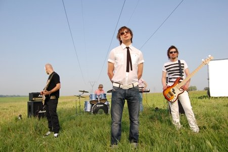

Історія
Гурт С.К.А.Й. можна справедливо назвати одним з найпопулярніших рокових гуртів в українському шоу-бізнесі.
Гурт був заснований у 2001 році. З того часу хлопці встигли написати багато пісень, активно погастролювати Україною, взяти участь у таких фестивалях як "Червона Рута", "Перлини сезону", "Таврійські ігри"… В цілому музиканти визначають свій стиль як поп-рок. Пісні С.К.А.Й. – це окремі оповідання про стосунки людей, про почуття та про все те, що оточує хлопців у житті.
Співпраця Lavina Music з групою СКАЙ почалась після того, як генеральний директор лейблу Едуард Клім побачив живий виступ гурту в проекті «Свіжа кров» на телеканалі М1 – він одразу ж вирішив зайнятись продюсуванням гурту.
Першим музичним вибухом, що привернув до гурту увагу "широкого загалу", став трек "Тебе це може вбити" - справжній хіт, що одразу здобув ротації на 25 радіостанціях України. На цю ж пісню було відзнято кліп, який вже довгий час активно мандрує телепростором. Другий кліп було знято на пісню "Ремікс" – веселу драйвову композицію, яка з перших акордів заводить публіку на концертах.
У 2006 році компанія Лавіна Мьюзік презентувала дебютний альбом гурту, під назвою "Те, що треба". Хіти з альбому одразу ж потрапили до гарячих ротацій на радіо, кліпи не зникають з ефіру телеканалів. Згодом вийшло відео на одну з головних піснень альбому "Те, що треба" – лірично-драматичну композицію в улюбленому жанрі фронтмена гурту Олега Собчука.
В 2007 році з'явились відеокліпи на композиції «Як мене звати» та «Best друг», в яких гурт звертає увагу суспільства на критичну ситуацію поширення СНІДу в Україні, а також розкриває проблему ВІЧ-позитивних людей. Ці кліпи одразу ж набули популярності серед молоді через свою актуальність.
31 жовтня 2007 року гурт презентував свій другий альбом «Планета С.К.А.Й.».
Як зазначив Едуард Клім, генеральний директор Lavina Music та продюсер гурту С.К.А.Й.: «Гурт значно виріс, і це очевидно. Тому другий альбом я можу впевнено назвати кращим роковим альбомом України в 2007 році».
Олег Собчук, вокаліст гурту С.К.А.Й.: «Ми хотіли показати наше бачення справжньої музики. Музики про речі, які є справді цінними в житті. Це і є наша своєрідна планета – «Планета С.К.А.Й.».
Успіх не змусив себе чекати. Вже навесні 2008-го гурт отримує премію "НеПопса", засновану радіостанцією "Джем ФМ". Фронтмен гурту С.К.А.Й. Олег Собчук став переможцем у номiнацiї «Кращий вокаліст». У номiнацiї «Кращий альбом року» була відзначена платівка «Планета С.К.А.Й.» гурту С.К.А.Й.
В травні 2008 року хлопці записують композицію "Подаруй світло" у двох варіантах – у ліричній та рок-версії – та знімають до них відео. Вперше в історії українського шоу-бізнесу було відзнято одразу дві версії одного кліпу
У цьому ж році «С.К.А.Й.» вирушили у концертний тур в рамках святкування 1020-річчя Хрещення Русі. Концертний тур пройшов 26 найбільшими містами України, Росії та Білорусі та інших країн. Цей захід мав за мету створення традиції щорічного святкування Дня Хрещення Русі в країнах слов'янської співдружності.
Не встигли хлопці трохи відпочити, як мобільний оператор Djuice запросив С.К.А.Й. стати хедлайнерами західного напрямку всеукраїнського туру "Djuice Music Drive 2008".
У 2009 році, вже вдруге радіостанція ДжемFM нагороджує гурт С.К.А.Й. Цього року за досягнення музикантів у галузі рок музики гурт отримує одразу дві статуетки Не попса. Відео робота С.К.А.Й «Подаруй світло» перемогла у номінації «Кращий кліп року». А концертний тур спільно з музикантами «ДДТ» та «Брати Карамазови» був відзначений як «Кращий тур року».
В кінці 2009 року гурт С.К.А.Й. виступив на Міжнародному Фестивалі у Польщі, в рамках заходів присвячених громадській акції «Бо я був чужинцем».
З-поміж усіх українських рок колективів організатори фестивалю запросили саме гурт С.К.А.Й. заспівати у Любліні.
С.К.А.Й. активно співпрацює з представництвом ООН в Україні. У вересні 2009 гурт підтримав проведення акції «Тиждень клімату в Україні».
10 січня 2010 року у Польщі відбувся 18-й фінал Великого Оркестру Святкової Допомоги. Український гурт С.К.А.Й. виступив на головній сцені польського міста Жешув. Великий Оркестр Святкової Допомоги є невід'ємною частиною польського Вудстоку – фестиваль, що проходить влітку є акцією-подякою за зібрані взимку кошти.
Гурт звертає увагу суспільства на критичну ситуацію поширення СНІДу в Україні, а також розкриває проблему ВІЧ-позитивних людей. С.К.А.Й. часто бере участь у благодійних заходах, навіть сам виступає їх ініціатором («Не будь байдужим», «Студ республіка», благодійний тур на відбудову храмів «З вірою та любов'ю», фестиваль «Гніздо»).
Нещодавно гурт від України приєднався до світової спільноти у боротьбі зі СНІДом, виконавши композицію Веаtles «All You Nees Is Love», яку в один і той же час співали зірки в багатьох країнах.
У травні 2010 С.К.А.Й. стає Фаворитом Успіху. Український рок гурт визнано фаворитом у номінації «чоловічий гурт» за підсумками конкурсу «Фаворити успіху».
У 2010 році сталася ще одна вагома для гурту подія – музиканти зі С.К.А.Й. випустили свій новий альбом під назвою «!». Довгоочікуваний третій за рахунком альбом українського рок-колективу - це нові 3D враження (ексклюзивна обкладинка альбому), а також зовсім нова музика від С.К.А.Й. Музиканти передивилися погляди на життя, подорослішали, і змінилися. Змінився і меседж – у цьому альбомі «С.К.А.Й.» акцентує увагу на речах, які в житті мало хто помічає, але які тим не менше є дуже важливими.